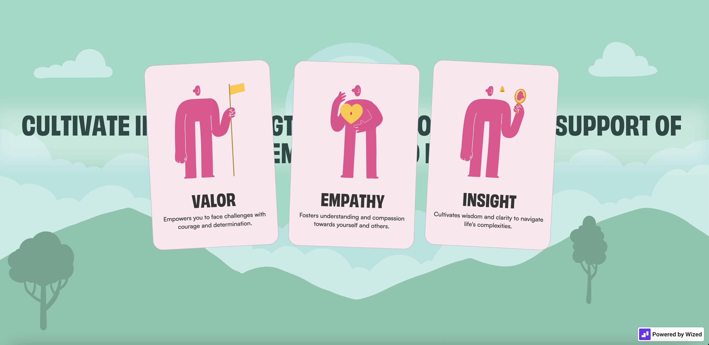

Soulstride used expressive and friendly illustrative visuals that enhance its conceptual clarity. The scroll-triggered animations create a narrative rhythm that guides users intuitively through the site. The design achieves a balance between informative and immersive, and maintains accessibility while using modern interaction patterns.
From an interaction design standpoint, the navigation is minimal and non-intrusive, allowing users to focus fully on the progressive unfolding of content. There’s a clear hierarchy in the typography and sectioning, and every animation is purposeful—not decorative, but supportive of comprehension and flow. The overall user experience feelsintentional, and aligning well with its content.

As users navigate the page, industry sectors like healthcare, education, and art unfold through animated scenes that merge typographic clarity with conceptual metaphors. These transitions make abstract and high-level content feel tangible and digestible. The pacing of the animations is informative, thus guiding viewers through the narrative with a sense of coherence.
The webstie contains interactive components within specific industry sections to deepen user engagement. Rather than simply presenting static descriptions or pre-animated visuals, it allows users to actively manipulate on-screen elements.
Combined with context-sensitive animations that respond to scroll, the site creates an experience that feels both story-driven and interactively alive. The effect is immersive and demonstrates how web design can rival motion graphics in intellectual engagement.